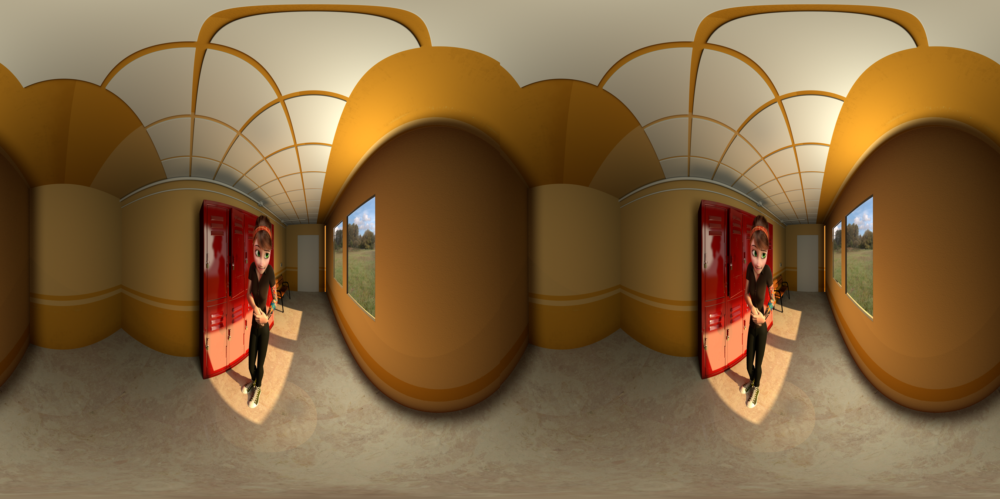

在本教程中，我们将为 MtoA 创建一个自定义摄影机，它可用来创建立体全景图像，稍后用于在 Oculus Rift 中进行可视化。
Oculus Rift 是一款虚拟现实头戴式设备，可使您置身虚拟世界。有关详细信息，请单击此处。

使用 Oculus Rift 可查看上面的高分辨率图像
您可以观看使用 Arnold for Oculus Rift 进行渲染的完整视频，该视频位于此处。
感谢 Mery Project 提供本教程中使用的场景。